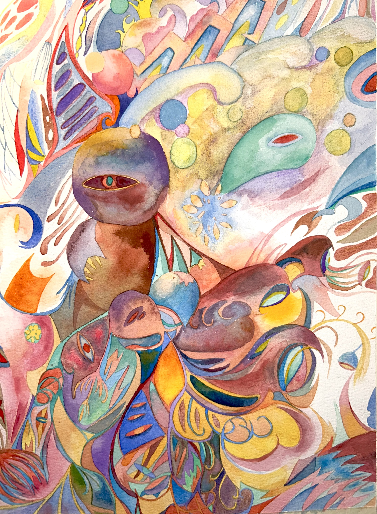
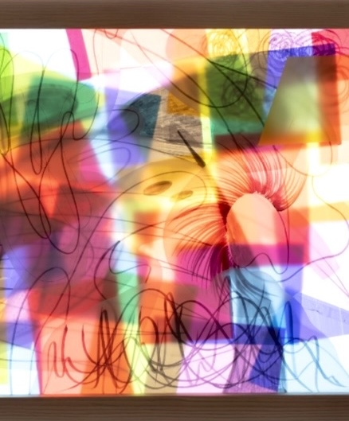
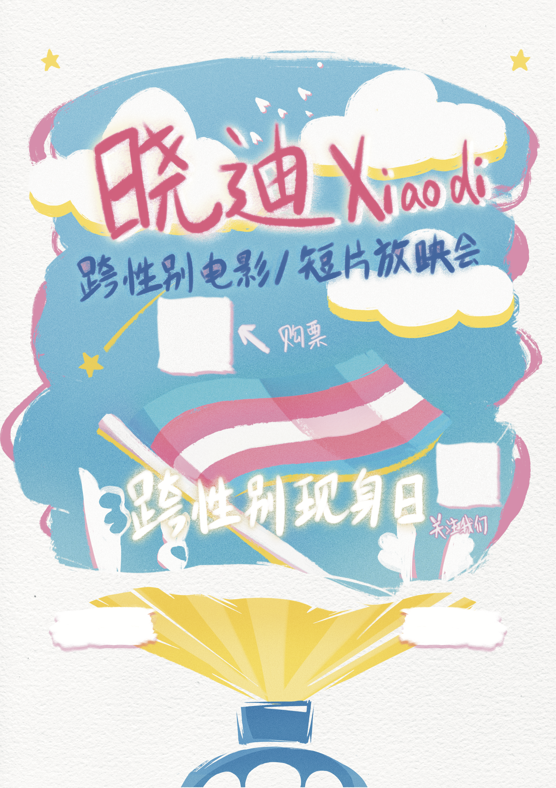
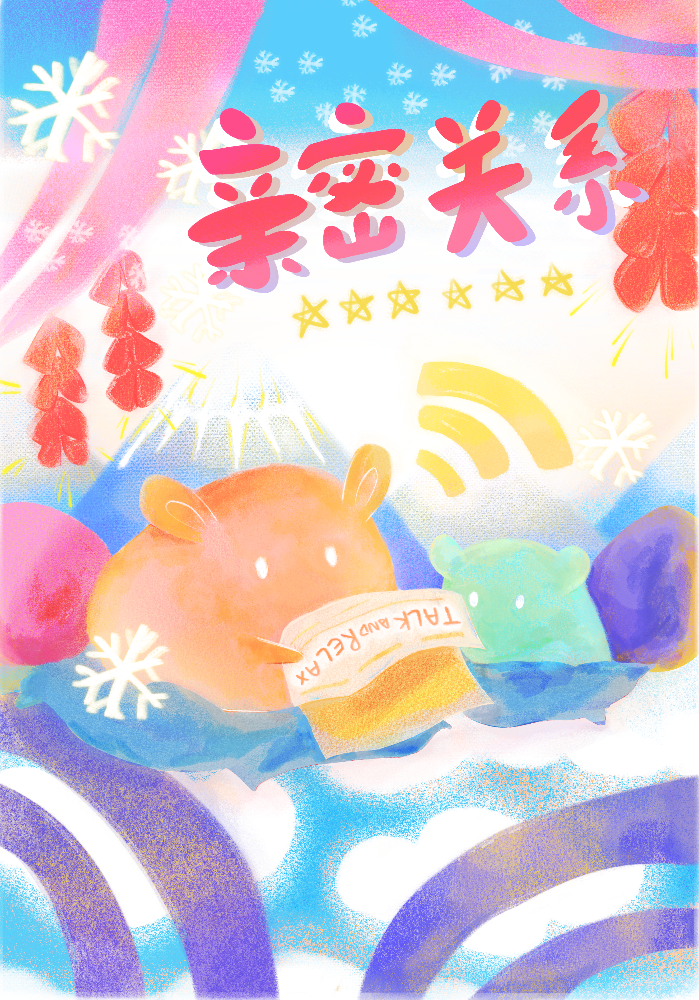

Hi, I'm
Cyan He
My design sensibility is grounded in a fine art foundation,
including studies at Goldsmiths, University of London and
brought into dialogue with interactive technology at SFU.
I design digital experiences that translate complex systems into intuitive,
purposeful interfaces, where aesthetic precision and human-centred logic work together.
I am currently studying Interactive Arts & Technology (BSc) at Simon Fraser University,
actively seeking co-op opportunities.

Interaction & Motion
Exploring how tactile feedback, microanimations, and ritual sequences shape how people feel inside a product.
Systems & Logic
Fascinated by how complex systems organise themselves — from information architecture to the logic embedded in everyday products.
Cultural Narratives
Interested in how cultural context shapes interaction patterns, visual language, and the assumptions baked into interface design.






